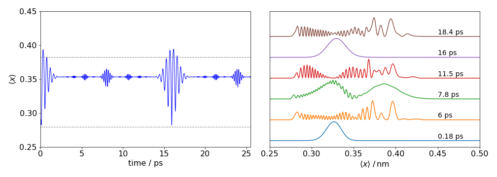

Quantum superposition and wavepackets.¶
# import all python add-ons etc that will be needed later on
%matplotlib inline
import numpy as np
import matplotlib.pyplot as plt
from sympy import *
init_printing() # allows printing of SymPy results in typeset maths format
plt.rcParams.update({'font.size': 14}) # set font size for plots
9 Wavepackets and superposition.¶
In calculating the energy and wavefunctions of the harmonic oscillator, hydrogen atoms, the rigid rotor, and many similar problems, the time-independent Schroedinger equation, \(H\psi = E\psi\), is used. However, many processes evolve in time and then a time-dependent form of the equation must be used and this is
where \(H\) is the Hamiltonian operator. The wavefunction must now depend upon time or its derivative would be zero. In some experiments a superposition of different wavefunctions is unavoidable and a non-stationary state is produced which must evolve with time if the energy levels differ. An example is an electronically excited state that is produced by absorbing photons from a femtosecond duration laser pulse. Many vibrational levels are simultaneously excited, because a narrow laser pulse must have a wide energy spread, and the wavepacket produced evolves with time. This can be observed by pump-probe spectroscopy (Zewail 1994). The amount of each level populated depends on the intensity of the light at each absorption frequency, the Franck-Condon factors involved in the absorption and the shape of the laser pulse.
Suppose that \(\displaystyle \psi_1^0(x)\) is the time-independent wavefunction which is the eigenfunction of \(H\psi_1 = E_1\psi_1\). This wavefunction could be that of the harmonic oscillator, of s or p-orbitals, or any other quantum mechanical model of an atom or molecule, with energy eigenvalue \(E_1\). The time-dependent version of this wavefunction is
where \(t\) is time and \(x\) is a spatial coordinate, which may be the bond extension of a vibrating molecule or the position of an electron in an atom. The probability of observing this single wavefunction in a region \(x \to x + dx\) is \(P(x, t)dx = \psi(x)^*\psi(x)dx\), which is constant in time because the complex conjugate removes any time dependence;
A second wavefunction describing energy \(E_2\) is \(\displaystyle \psi_2(x, t) =\psi_1^0(x)e^{-iE_2t/\hbar}\) then a normalized superposition of these two wavefunctions could be \(\displaystyle \Psi=(\psi_1 + \psi_2)/\sqrt2\) if equal contributions are made from each wavefunction. (The \(x\) and \(t\) labels are suppressed for clarity). In general, with two wavefunctions
where \(\alpha\) and \(\beta\) are the amounts of the respective wavefunctions. These amounts are limited by \(\displaystyle |\alpha|^2 + |\beta|^2=1\). The modulus \(|\alpha| = \sqrt{\alpha^*\alpha}\) is used here as \(\alpha\) may contain a complex quantity.
If many wavefunctions are in the superposition or wavepacket, then \(\displaystyle \Psi = \sum\limits_{n=1}^N\alpha _n\psi_n\) and if normalized the condition is \(\displaystyle \sum\limits_{n=1}^N|\alpha|_n^2 =1\). In each of these cases, \(\Psi\) evolves in time, as does the probability \(P(x, t)\), and this is explained next.
The stationary-state wavefunction is \(\psi^0(x)\) and depends only on position. A superposition or wavepacket might be formed by absorbing photons with an energy spread covering only two different energy levels \(E_1\) and \(E_2\). However, a wavepacket containing only two levels, while formally correct, is hardly a wavepacket at all and in practice many levels could be involved. Nevertheless, two will be used here to illustrate what happens. The wavepacket with equal amounts of the two wavefunctions and added in phase is
and the amount of each wavefunction varies as time proceeds because \(E_1\) and \(E_2\) are different. The exponential terms can be considered as phase factors and, since they oscillate in time, they cause the wavefunctions to be added together in different proportions. Recall the identity \(\displaystyle e^{-ix} = \cos(x) - i \sin(x)\); this can be used to illustrate how the wavefunctions behave. The two-wavefunction wavepacket could be written as,
but this is rather long and the exponential form is preferred. Any measurement of the wavepacket is always proportional to \(\Psi^* \Psi\) so the imaginary part is lost in the product via the complex conjugate leaving only real terms. This can be seen by calculating the probability of the molecule being at a position \(x\) at a time \(t\) which is
where the * indicated the complex conjugate; the \(x,\,t\) labels on the wavefunction are removed for clarity. In any classical calculation, terms are squared then added; in quantum mechanics always do the opposite, therefore,
because this leads to the interference or cross terms such as \(\psi_1\psi_2\) that are absent from any classical calculation. Hence,
Substituting for the wavefunctions and taking complex conjugates gives,
of which the last term is the most interesting as it represents the interference of the two wavefunctions with one another and is a purely quantum effect. The first two constant terms are those produced by a classical calculation. Defining a frequency as \(\displaystyle \omega=(E_1-E_2)/\hbar\) and using the definition of the cosine gives,
which shows that the probability oscillates with frequency \(\omega\) in addition to a constant term. This means that the amount of each wavefunction in the superposition changes in time if the energy difference \(E_1 - E_2\) is not zero. Note that the probability oscillates only because there is an energy difference between two levels.
If the wavefunctions are added in phase, this means that there are terms where time origin is the same in each, for example \(\displaystyle e^{-iE_1t/\hbar}, \; e^{-iE_2t/\hbar}\). However, if we delay the generation of one of the wavefunctions, as is possible when using finite-duration laser pulses to form wavepackets, then we would produce terms such as \(\displaystyle e^{-iE_1t/\hbar}\) and \(\displaystyle e^{-iE_2(t-t_0)/\hbar}\) where \(t_0\) is a constant time difference between exciting each energy level and hence forming the wavepacket. This constant time delay is equivalent to a phase delay \(\varphi\) because in a sine or cosine a constant term is equivalent to a phase delay, \(\displaystyle \cos(E_1(t+t_0)/\hbar) \equiv \cos(E_1t/\hbar+\varphi)\).
Any laser pulse exciting molecules has a finite duration, therefore there are a range of phases produced during excitation because different parts of the wavepacket start at different times. The effect is that of convoluting in time the laser pulse with \(P(x, t)\). (Convolution is described in Chapter 9.7).
The effect of adding together some harmonic oscillator wavefunctions is shown in the next figures and code. A harmonic potential is used and values of the constants used are for HCl. The wavefunctions are added in equal amounts with vibrational quantum numbers \(n = 3 \cdots 8\). Below this are shown the wavepackets formed at \(t = 0, 1/4\), and \(1/2\) period. At \(t = 0\) it is easy to see that the addition will produce amplitude at the right of the potential. At \(1/2\) a period the wavepacket is the mirror image of that at \(t = 0\) as the phase of the wavefunctions, the \(\displaystyle e^{i\omega t/\hbar}\) part, has reversed and therefore reinforcement occurs on the left part of the potential. At intermediate times, the wavepacket is some arbitrary shape depending on how the exponential terms make the wavefunctions add together. The wavepacket is placed at its average energy on the potential.
# wavepacket calculation
def Hermite(n,x): # use recursion formulae, x is real, n is order.
if n == 0:
return 1
elif n == 1:
return 2*x
else:
return 2*x*Hermite(n - 1,x) - 2*(n - 1)*Hermite(n - 2,x)
#--------------
def fact(n): # factorial
if n == 0 or n == 1:
return 1
else:
return n*fact(n - 1)
#--------------
fig1= plt.figure(figsize=(15, 6)) # use figure to define plot size and subplots
plt.rcParams.update({'font.size': 16}) # set font size for plots
ax0 = plt.subplot(1,3,1)
ax1 = plt.subplot(3,3,2)
ax2 = plt.subplot(3,3,5)
ax3 = plt.subplot(3,3,8)
ax4 = plt.subplot(3,3,3)
ax5 = plt.subplot(3,3,6)
ax6 = plt.subplot(3,3,9)
#--------------
pm = 1e-12 # picometres
amu= 1.6604e-27 # kg
c = 2.9979e10 # cm/s
h = 6.6256e-34 # J.s
mu = 1*35/(1+35)*amu # kg
nu = 2989.7 # HCl frequency in cm^(-1)
k = (2*np.pi*nu*c)**2*mu # force constant N.m
alpha = 2*np.pi*np.sqrt(mu*k)/h #
period= 2.0*np.pi/(nu*c) # seconds
ni = 3 # initial and final quantum numbers
nf = 8
V = lambda x: 0.5*k*x**2/(h*c) # potential energy in cm^(-1)
Enrg = lambda n, nu: nu*(n+1/2) # energy cm^(-1)
psi = lambda x, n, alpha: np.sqrt( 1/(2^n*fact(n)) * np.sqrt(alpha/np.pi) )*\
np.exp(-alpha*x**2/2.0)*Hermite(n,x*np.sqrt(alpha)) # harmonic ascillator wavefunction
wp = lambda x,tm: sum([ psi(x,n,alpha)*np.exp(-1j*Enrg(n,nu)*c*tm) for n in range(ni,nf)] ) # add up wavefunctions
numx = 200
x = np.linspace(-60*pm,60*pm,numx)
for n in range(ni,nf+1):
ax0.axhline(Enrg(n,nu),linestyle='dashed',color='gray')
ax0.plot(x/pm, Enrg(n,nu)+ psi(x,n ,alpha)/450,color='blue')
ax0.annotate(str(n), xy=(60, Enrg(n,nu)*1.025), xycoords='data')
ax0.plot(x/pm,V(x),color='red')
ax0.set_ylim([5000,30000])
ax0.set_xlabel(r'$displacement\, /\,pm$')
ax0.set_ylabel(r'$Energy\,/\,cm^{-1}$')
ax0.set_title('HCl wavefunctions and\nquantum numbers n='+ str(ni)+'..'+ str(nf))
E_offset =(Enrg(ni,nu)+Enrg(nf,nu))/2.0
for i,ax in enumerate([ax1,ax2,ax3,ax4,ax5,ax6]):
tme= i*period/4
ax.plot(x/pm, E_offset + 2e-9*(wp(x,tme)*np.conjugate(wp(x,tme))).real,color='green') # make Psi^*Psi
ax.plot(x/pm,V(x),color='red')
ax.axhline((Enrg(ni,nu)+Enrg(nf,nu))/2.0,linestyle='dashed',color='gray')
ax.set_title(str(i/4)+' period')
ax.set_ylim([15000,25000])
ax.set_yticklabels([])
ax.set_yticks([])
pass
fig1.tight_layout()
plt.show()
Figure 15. Harmonic oscillator wavefunctions for the \(n = 3 \to 8\) levels of the ground state of HCl drawn with the potential energy and placed at the energy of each level. It is assumed that the potential is harmonic. On the side is shown the probability density \(\Psi^*\Psi\) for six wavepackets; at \(t = 0, 1/4, 1/2, 3/4 ,1\) and \(5/4\) of a period. The wavefunctions are added with equal contributions to make the wavepacket.
The initial wavepacket is formed on the right of the potential where the wavefunctions are all positive, and although not exactly in phase they are sufficiently so that at this bond displacement, the resultant wavepacket is positive. On the left of the potential at this time, the wavefunctions are alternately positive and negative so add approximately to zero. As time progresses the phases associated with the wavefunctions change; imagine this as the sine part becoming cosine and vice versa and this leads to the superposition being large on the left side of the potential when a time of half a period is reached. As more time elapses, the wavepacket continues to change and will reform after one period and then repeats the cycle ad infinitum. The harmonic oscillator is unusual in that all the energy levels are separated by an equal amount; this means that all the components of the wavepacket are changing at the same single frequency. In an anharmonic oscillator, rigid rotor, or H atoms, for example, the energy levels are not equally spaced; so many frequencies must be present in the wavepacket.
Initially suppose that the wavepacket has an approximately Gaussian or bell shape in its spatial coordinate. The different frequencies present mean that as time progresses the wavepacket spreads out and appears to become random, but it will nevertheless reform itself after a certain period, governed by integer multiples of the lowest frequency present. This period is often a large number of roundtrips across the potential, unlike the harmonic potential where the wavepacket reforms after each round trip. The process of many oscillators reforming the original wavepacket is called recurrence. After recurring, the wavepacket appears to become random again, although it is not, and then recurs and repeats the sequence unless something happens to stop this. Usually collisions with other molecules or energy flowing into vibrational modes not excited by the laser will destroy the wavepacket. Children playing on swings can be seen to ‘recur’ when at some time after starting, they all swing in phase for an instance, then become out of phase again. In fact any system consisting of several oscillators with different frequencies will show recurrences governed by integer multiples of the lowest frequency. It is even possible also to observe fractional recurrences (Vrakking et al. 1996).
One way of detecting recurrences is to calculate the mean position \(\langle x \rangle\) of the wavepacket. The wavepacket is initially formed at one side of the potential (by absorbing a photon from the ground state) and then propagates back and forth across the potential, as shown in the next figure (fig 16). If the wavepacket is spread out its mean value is not necessarily that of the equilibrium internuclear separation because any real molecule has an anharmonic potential, such as the Morse potential and the mean value is at longer internuclear separation than \(r_e = 0.308\) nm for the \(\mathrm{I_2}\) potential in fig (16). The mean wavepacket position is shown for the B excited state of iodine excited by a \(40\) fs Gaussian shaped pulse centred at \(550\) nm. The recurrences at about \(15.7\) ps and partial recurrences at other times are clear. The mean value is \(\langle x \rangle_t = \int xP(x, t)dx\) which in practice is usually replaced by a summation because discrete values of position are normally calculated. The figure also shows how the wavepacket behaves like a particle oscillating in the potential as the bond stretches and compresses during the first \(2\) ps at \(\approx 16\) ps and less so at \( \approx 8\) ps. But at other times there is no apparent motion because the average bond extension is constant in time. What happened here is that the wavepacket has split into parts that counter propagate and/or interfere with one another in such a way that for a while the average is constant. The figure on the right shows a few wavepackets measured at approximately \(0.325\) nm, which is about halfway across the potential. The recurrence at about \(16\) ps is clear and partial recurrence at \(\approx 8\) ps is also seen, with apparently random motion at other times.

Figure 16. Iodine wavepackets. Left the average position \(\langle x \rangle\) vs time. The data was calculated using the split time method (Kosloff 1988) The motion shows recurrences in the average position, full at zero and \(\approx 16\) ps and half at multiples of \(\approx 8\) ps. Other fractional recurrences can be observed. The data on the right shows the wavepacket amplitude across the potential at different times. The recurrence at \(\approx\) 16 ps is clear.
When a pump-probe experiment is performed, it is possible to observe wavepacket motion, but not the wavepacket itself because there is no known microscope with which this could be done. What this method does is to excite the molecule and then probe the excited state later with a very short (femtosecond duration) laser pulse and a signal is produced as the wavepacket moves through the time and wavelength (or energy) windows covered by the probe pulse (Atkins & de Paula 2006, pp. 892-3 and Zewail 1994). The experimental observation is a signal oscillating in time.
9.1 Superposition of many wavefunctions¶
The general superposition where each stationary-state wavefunction is weighted with its contribution \(\alpha\) or \(\beta\) is \(\displaystyle \Psi = \frac{\alpha\psi_1+\beta\psi_2}{\sqrt{\alpha^2+\beta^2}}\). This similar to equations just derived because
Calculating the probability as \(P = \Psi^*\Psi\) by taking the complex conjugate of the superposition wavefunction and multiplying gives
where the frequency is \(\displaystyle \omega = (E_1-E_2)/\hbar\).
When there are several, say \(S\), wavefunctions in the superposition, all the combinations of frequencies as determined by the energy gaps are present and there are therefore many cosine terms. For example, with three wavefunctions there are three frequencies corresponding to energy gaps \(E_3 - E_2,\;E_3 - E_1,\; E_2 - E_1\). Terms such as \(E_3 - E_3\) and so forth, lead to a time-independent term because \(\cos(0) = 1\). The probability in the general case where there are \(S\) levels in total is this monstrous looking equation:
where and \(c_n\) and \(c_m\) are the coefficients which, above, were called \(\alpha\) and \(\beta\) when there were just two terms; \(N\) is the normalization constant.
In general, where the coefficients may also be complex numbers, as may the wavefunctions, the wavepacket has the form
and when calculating it is often convenient to make the sum first then take its complex conjugate and multiply them together. This is the form of equation used to produce Fig.16 (above), when convoluted with the laser pulse shape. The wavefunctions for the Morse potential were used (Morse 1929), but in situations where the wavefunctions are not known because the Schroedinger equation cannot be solved algebraically, the numerical method known as the split-time operator method can be used (see Kosloff J. Phys. Chem. 92, p2087, 1988).
To illustrate how to use the cosine equation \(P(x, t)\), let \(S = 2\), then taking the terms in the summation in order \((n, m) = (1, 1), (1, 2), (2, 1), (2, 2) \) gives
which is the same result worked out in detail in equation (52) after performing some more simplifications and \(\alpha = c_1,\; \beta = c_2\) and as the energy gap always being taken as positive the frequencies are always positive and as \(\omega_{1,2}=\omega_{2,1}\), the probability of observing the wavepacket is
Finally, note that sometimes the equations are written as \(\displaystyle \Psi(x,t)=\frac{1}{\sqrt{|\alpha|^2+|\beta|^2}}\left(\alpha(t)\psi_1^0(x)+\beta(t)\psi_2^0\right)\) where the time dependence is put into each constant as \(\displaystyle \alpha e^{iE_jt/\hbar} \equiv \alpha(t)\) and the normalization involves calculating the modulus or absolute value of \(\alpha, \beta\) not just their square. The final result is the same; it is only a matter of choice how the equation is written.